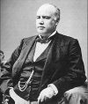

19. yy’da ABD’de Tanrı’nın varlığını açıkça sorgulamak ya şaşkınlığa ya da aşağılanmaya neden olurdu. Avukat Robert G. Ingersoll (1833–1899) donkişotvari bir kampanya başlatarak inançsızlığın kabul edilebilir hale gelmesi için mücadele etti.

Massachusetts’e ilk yerleşen Püritenler’in soyundan gelen İngersoll, katı Kalvinist bir ailede yetiştirilmişti. 1852 yılında evden ayrıldı ve kısa bir süre öğretmenlik yaptı. Kardeşi Ebon (1831–1879) ile birlikte İllinois eyaletindeki Peoria’da bir hukuk bürosu kurdu.
Köleliğe karşı olan Ingersoll, İç Savaş sırasında Birlik Ordusu’na gönüllü olarak katıldı. 1862 yılında Shiloh Muharebesi’nde çarpıştı. Daha sonra Konfederasyon askerleri tarafından esir alındı. Kısa bir süre savaş esiri olarak tutuldu. Serbest kaldıktan sonra aktif bir biçimde politikaya atıldı. 1864 yılında kardeşi Ebon’un Temsilciler Meclisi’ne İllinois’dan seçilmek için yaptığı başarılı kampanyaya destek oldu.
İngersoll, İllinois valisi olmak istiyordu. Ancak Cumhuriyetçiler onun ortodoks olmayan dini inançlarının farkına vardılar. O dönemde bir agnostik olarak damgalanmak politik bir intihar demekti. Hayat boyu cumhuriyetçileri desteklemiş olmasına rağmen hiçbir göreve getirilmedi ve kendisine Cumhuriyetçi başkanlık kabinesinde yer verilmedi.
Yılmayan İngersoll, 1870’lerde geleneksel dini düşüncenin karşısında “özgür düşünceyi” savunan dersler vermeye başladı. Bu terim onun inançların duygu ya da hurafelere değil akla dayanması gerektiği şeklindeki düşüncesini yansıtıyordu. Güçlü bir hatip olan İngersoll, 1884 yılında Amerikan Seküler Birliği’ni kurdu. Bu grup özgür düşünceyi desteklemeyi amaçlıyordu. Din görevlilerinin ordudan çıkarılmasını, devlet ve kilisenin birbirinden ayrılmasını savunuyordu.
İlk Amerikan agnostiği İngersoll değildi. İngersoll, Thomas Jefferson (1743–1826) ve Thomas Paine (1737–1809) gibi isimleri halefleri olarak görüyordu. Onu özgün kılan, rahatsız edici düşüncelerini kamunun önünde açıkça dile getirmesiydi. Fikirlerini ortaya koyan düzinelerce kitap yazdı. Altmış beş yaşında ölene kadar Cumhuriyetçi bir politikacı olarak kaldı. Ölünce Arlington Ulusal Mezarlığı’na gömüldü.
Ek Bilgiler
1- 1867-1869 yılları arasında kısa bir dönem Illinois’te başsavcılık yaptı.
2- Aynı zamanda ünlü bir savunma avukatıydı. Tanınmış müvekkillerinden biri de Arkansas eski senatörü Stephen Dorsey’di (1842–1916). Federal hükümeti 5 milyon dolar dolandırmakla suçlanmış ve 1883 yılında yargılandıktan sonra aklanmıştı.
3- Mezar taşının üzerinde yazanlar onun iki temel düşüncesini yansıtır (agnostizm ve kölelik karşıtlığı): “Hiçbir şey insan bedenindeki zincirleri kırmaktan daha değerli değildir. Hiçbir şey ruhun hayaletlerini yok etmekten daha asil değildir.”